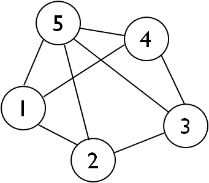
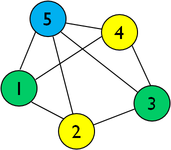

The vertex coloring problem (VCP) is an NP-hard classical problem in graph theory which can be traced back to a letter written to W.R. Hamilton by A. de Morgan in 1852 in which the famous Four Color Theorem has its roots. Besides its obvious theoretical relevance, it has found practical applications connected to scheduling and allocation of resources (i.e. memory for different processes, frequencies for WLANs etc.).
A (proper) vertex coloring of a simple undirected graph G=(V, E) is an assignment of color numbers to all vertices such that pairwise adjacent vertices have different colors. The size of the coloring is the number of different colors employed. The chromatic number of a graph χ(G) is the minimum number of colors required to color G, i.e. the size of its optimum coloring. The VCP can be formulated as finding a minimum coloring for a given graph.
Compared with other related graph optimization problems such as the maximum clique problem (i.e. finding the largest possible subgraph in a given graph), VCP is considerably more challenging; for example it is possible to compute a maximum clique exactly in massive sparse graphs with millions of vertices, whereas fast exact coloring of a random graph with 80 vertices and 0.5 edge density already requires efficient algorithms and a powerful CPU.
Sequential greedy approximate coloring (SEQ)
This post is concerned with a specific approximate coloring procedure called sequential greedy coloring (usually referred to as SEQ). It is a very useful and simple heuristic which produces reasonably tight colorings. A typical implementation runs in O(|V|* |V|) although procedures in O(|E|) are also known and employed in large sparse graphs.
SEQ assigns the smallest possible color number to each vertex in order consistent with the current partial coloring. Pseudocode for SEQ appears in listing 1.
1 2 3 4 | SEQ (G(V={v1, v2, …, vn} , E)) 1. for v≔v1 to vn 2. assign the smallest possible color to v 3. endfor |
Listing 1. Sequential greedy coloring.
Figure 1 below shows an example of a coloring produced by SEQ. The numbers inside the vertices indicate the predefined ordering. In the example SEQ starts by labelling vertex 1 with color number 1 (green) and then proceeds to label vertex 2 with color number 2 (yellow) because it is adjacent to 1. Thereafter the smallest possible color for vertex 3 is green, vertex 4 is colored yellow and finally vertex 5 requires an additional color number (cyan) because it is adjacent to 1 and 4.
|  |  |
| Figure 1. An example of sequential greedy coloring (in this case also a minimum coloring and solution to the VCP) | |
The resulting coloring C(G)={C1, C2, C3} has size three with color sets C1={1, 3}, C2={2, 4} and C3={5}. Note that each color set is an independent set, i.e. all its members are pairwise non-adjacent. This is a common property of all vertex colorings.
An efficient bit-parallel implementation of SEQ
We will now show a very efficient way of implementing SEQ in a bit-encoded graph to exploit bit-parallel transmission. We assume the reader has a minimum knowledge of both GRAPH and BITSCAN C++ libraries. If this is not the case we refer the reader to the documentation in the corresponding blocks in the Biicode repository.
The bit-encoded graph encoded by GRAPH contains |V| bitarrays which map the neighbor sets of every vertex (i.e. each row of the adjacency matrix). In the example of figure 1 the graph is encoded with the following 5 bitstrings: B{1} = 01011, B{2}=10101, B{3}=01011, B{4}=10101 and B{5}=11110. In a similar fashion, vertex sets and induced subgraphs are mapped to bitstrings when needed making use of BITSCAN.
When exploiting bit-parallelism it is important that algorithms are carefully designed so that the critical operations are computed through bitmasks. Typical good operations when working with bit-encoded sets are set-intersection and set-difference. A bad operation frequently needed is set element enumeration (i.e. determining the position of all 1-bits in the bitarray).
In the case of SEQ a good compromise between good and bad operations is achieved by changing the control flow to produce color sets sequentially (in the example first C1 then C2 and finally C3). Note that now no vertex is assigned color number k until all color sets below k have been completed. Listing 2 describes the proposed modification for the SEQ algorithm.
1 2 3 4 5 6 7 8 9 10 11 12 13 14 | BIT_PARALLEL_SEQ (G) Initial step: U≔V, k:=1, C:= EMPTY Output: A greedy sequential class coloring C(G) 1. while U is not empty 2. Ck≔U //candidate set to color 3. repeat until all vertices in Ck have been selected 4. choose the first vertex v from Ck not previously selected 5. remove from Ck vertices not adjacent to v //main coloring operation 6. remove v from U //mark v as colored 7. endrepeat //end of color Ck 8. add Ck to the output coloring C 9. k≔k+1 //next color set 10.endwhile |
Listing 2. BIT_PARALLEL_SEQ. It computes color classes sequentially.
Listing 3 describes an efficient implementation of BIT_PARALLEL_SEQ with GRAPH. The procedure receives as input the graph to be colored (encoded as the ugraph type from GRAPH) and returns the size of the coloring and the concrete color assignments (in vector color passed as parameter). The procedure uses two auxiliary vertex sets m_unsel and m_sel bit-encoded with BITSCAN. m_unsel refers to the remaining uncolored vertices; m_sel contains the candidate vertices which can enlarge the current color class. Initially m_unsel is mapped to V (i.e. all bits are set to one).
1 2 3 4 5 6 7 8 9 10 11 12 13 14 15 16 17 18 19 20 21 22 23 24 25 26 27 | #include "pablodev/graph/graph.h" //header for GRAPH in Biicode repository int BIT_PARALLEL_SEQ (ugraph& G, vector<int>& color){ //initial values int N=G.number_of_vertices(), k=0, v= EMPTY_ELEM, from=EMPTY_ELEM; color.assign(N, EMPTY_ELEM); m_unsel.set_bit(0, N-1); //initially maps to V: all bits to 1 //main loop while(true){ m_sel=m_unsel; m_sel.init_scan(bbo::DESTRUCTIVE); while(true){ if((v=m_sel.next_bit_del(from, m_unsel))==EMPTY_ELEM) break; color[v]=k; //stores the vertex color number if((--N)==0) return k; //exit point //computes next vertex of the current color class m_sel.erase_block(from, G.get_neighbors(v)); } ++k; //next color } return k; //should not reach here } |
Listing 3. The proposed BIT_PARALLEL_SEQ implementation.
The procedure is made up of two nested loops. The outer loop sets the candidate vertices of a new color set Ck in m_sel, while the inner loop computes Ck. Critical operations that make use of bit-parallel transmission are:
Copy of uncolored vertices from m_unsel to m_sel at the beginning of the outer loop.
Filtering of candidate vertices for the current color set by the BITSCAN erase_block function (computed as a set_difference operation).
Enumeration of vertices in m_sel is one of the bad operations but is implemented as an efficient destructive BITSCAN loop (see BITSCAN reference) in the inner loop of BIT_PARALLEL_SEQ:
1 2 3 4 5 | m_sel.init_scan(bbo::DESTRUCTIVE); while(true){ if((v=m_sel.next_bit_del(from, m_unsel))==EMPTY_ELEM) break; //… } |
Inside the inner loop, each time a vertex v is selected it is deleted simultaneously from m_sel and m_unsel in next_bit_del which is a useful optimization. Afterwards color is updated with the new label for v (color[v]=k) and the empty set condition is evaluated (–N==0) to check if all vertices are colored. If this is not the case the procedure enters into the erase_block coloring operation which removes those vertices which cannot now make part of the current color class and proceeds with the next iteration. Noteworthy is that erase_block has been optimized in BITSCAN so that only blocks in m_sel containing the current vertex v (index block from) and higher are considered in the filter.
We hope readers enjoy BIT_PARALLEL_SEQ. It is extremely fast and is currently being used as part of state-of-the-art maximum clique algorithm BBMC in to compute clique upper bounds. The implementation described here is available in the combinatorial optimization block pablodev/copt in the Biicode repository.
If you liked this post please comment below. If you want to try biicode just click on the sidebar button and if you have any doubts check our docs, forum, Stackoverflow tag and Github repos.
Pingback: Solving the maximum clique problem: BITSCAN - biicode Blog()